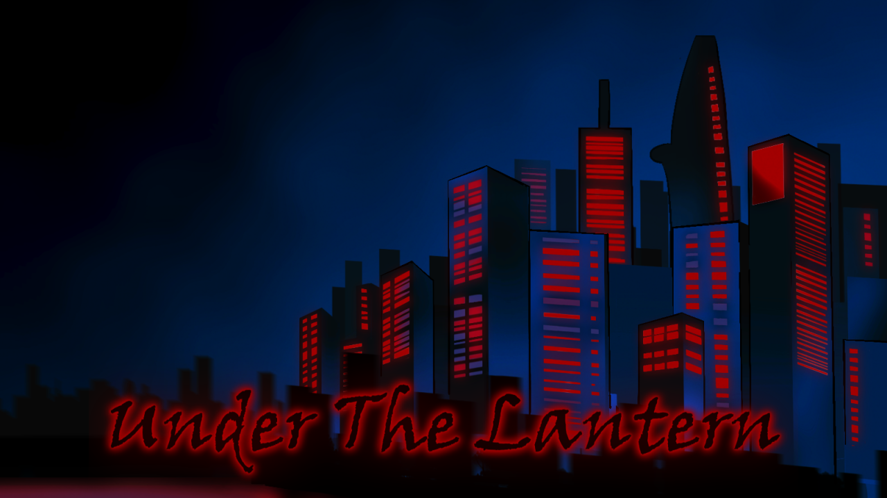
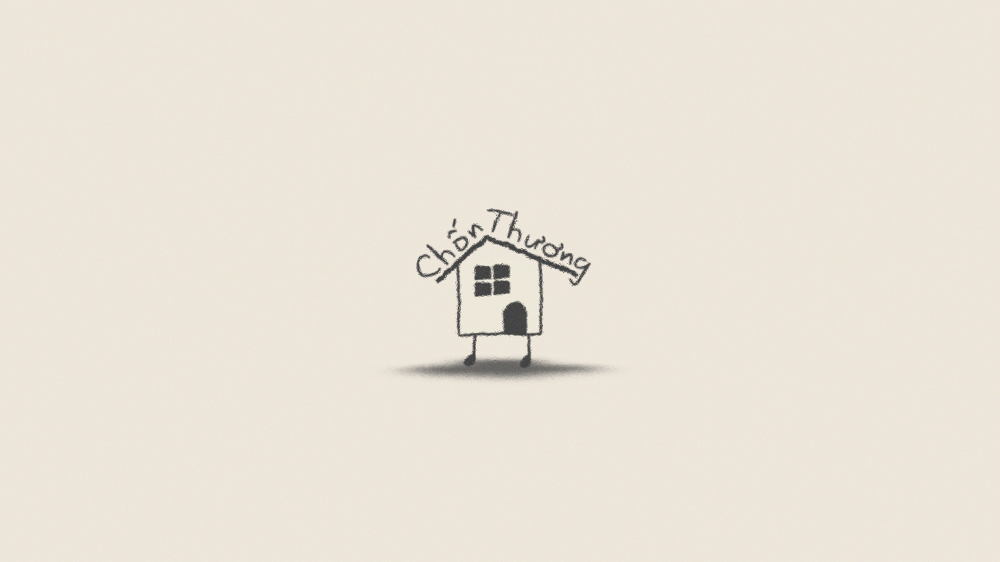
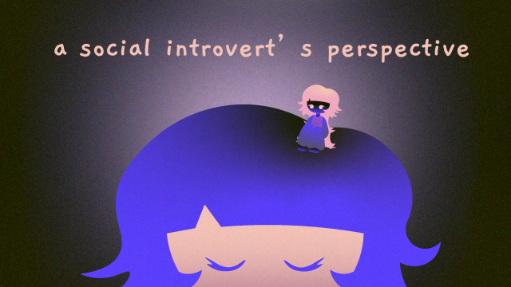
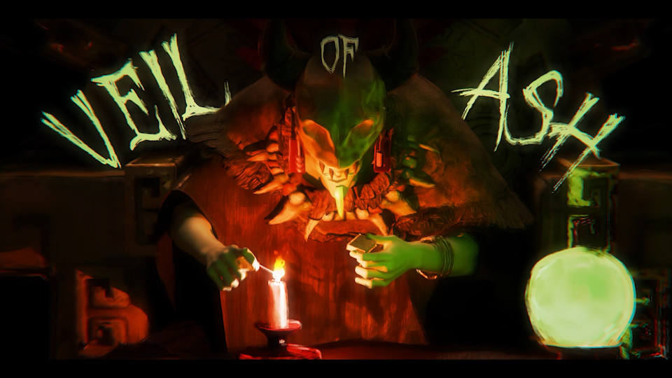
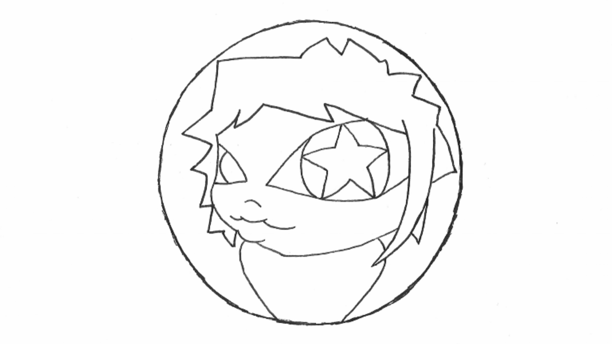
Under the Lantern.mp4
Under the Lantern
On his way home after a long day, a blue collar worker takes the wrong turn and finds a strange food stall glowing in the night.
Credits
Art Direction | Pham Phuong Vy
Script | Pham Nguyen Tran Tran
Character Design | Pham Phuong Vy
Background Design | Pham Nguyen Tran Tran
Line Art | Pham Phuong Vy, Pham Nguyen Tran Tran
Coloring | Pham Nguyen Tran Tran
Look Development | Pham Nguyen Tran Tran, Pham Phuong Vy
Animation & Sound Design | Pham Phuong Vy
Compositing & Editing | Pham Phuong Vy
Special Thanks To
Phan Bao Chau
Ricardo Arce
Chon Thuong Intro.mp4
Chon Thuong
Details
This is the introduction motion graphics video for the Chon Thuong series.
Credits
Director | Binh Minh
Producer | Kaituary
Art Director | Binh Minh
Charater Design | Pham Phuong Vy
Motion Graphics | Pham Phuong Vy
a social introvert's perspective.mp4
A Social Introvert's
Perspective
Concert Piece
When the curtain rises, go hide and wait until everybody
leaves you.
Come out and play.
1963 autumn
Concept
The animation dives into a social introvert’s perspective and explores how they are not opposed to socializing and interacting, but being surrounded by large groups can be overwhelming and draining, so social introverts prefer spending time by themselves.
In “a social introvert’s perspective”, we follow a young girl with two personas: a normal self and an asocial self, go through a normal day, and understand how she truly feels in bustling social settings.
The term ‘When the curtain rises’ symbolizes a day started, with the moon and stars of the night vanishing and the sun and clouds appearing in the sky. The asocial self then will ‘go hide and wait’ for her normal self to wake up to navigate through an everyday life. The contrast of colors between real life and her inner mind describes the tension she felt. The moment when ‘everybody leaves’, the asocial self comes into view and cherish her peace and self-reconnection.
Credits
Original Concept | Pham Phuong Vy
Character Design | Pham Phuong Vy
Animation | Pham Phuong Vy
Sound Design | Pham Phuong Vy
Veil of Ash.mp4
Veil of Ash
A blade, a mask, a whisper: one man’s pursuit of justice leads him into the fog where memory and fate become one.
Abstract
Veil of Ash is a 3D animated shortfilm blending poetic tragedy with East Asian visual traditions. It explores the unbreakable bond of brotherhood and the cost of loss. A lone swordsman seeks a fortune teller hidden in a mountain shrine, hoping to uncover the fate of his younger brother, taken years ago in smoke and fire.
The film inspired by ink-wash painting, samurai cinema, and Asian cultures to reflects a personal creative journey to bring a lyrical, emotional idea to life through animation.
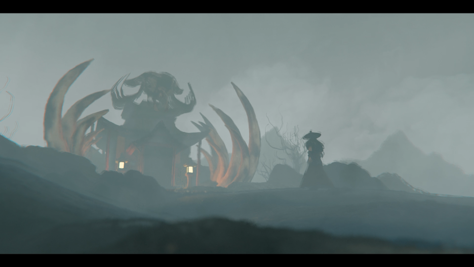
Production
The main software we used for most parts of the project is Blender, including modeling, texturing, rigging, weight painting, and animating.
After the animation process, our team brought all the footages into After Effects for post-production.
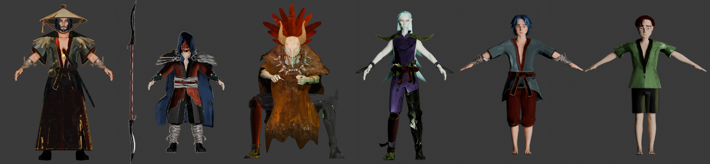
All of the character designs made in Blender.
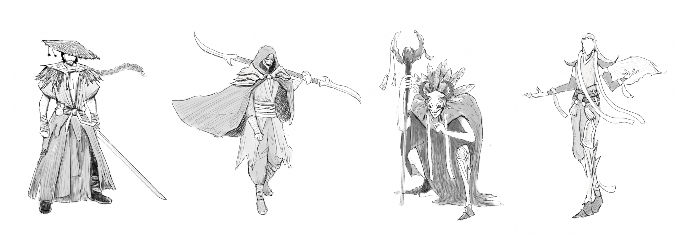
Character designs illustrations.
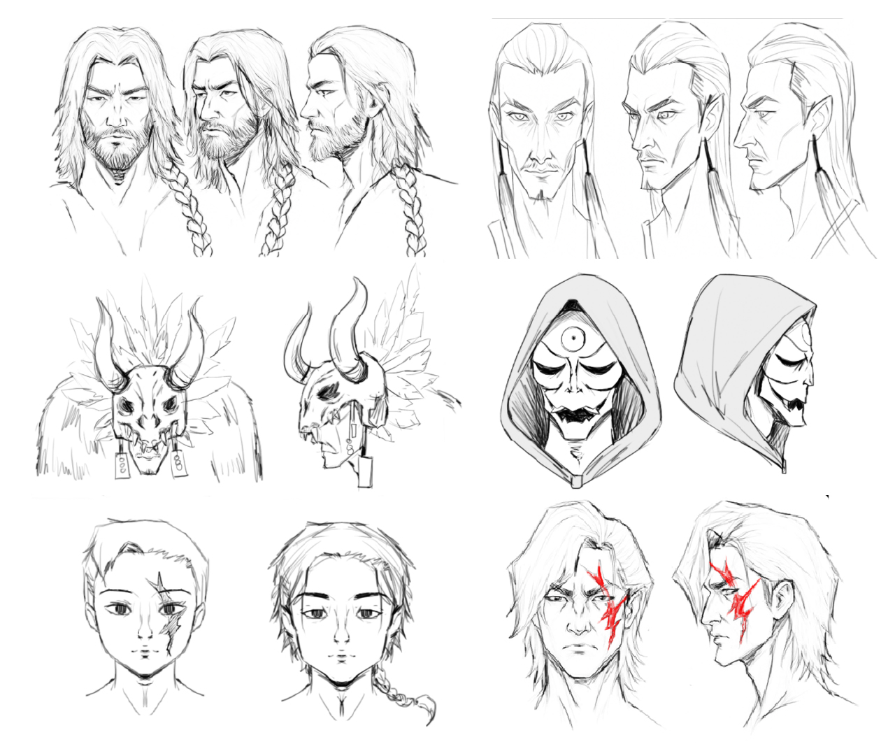
Closed-up character designs illustrations.
Credits
Character Design | Ngo Khanh An
Environment Design | Huynh Truc Nhat Minh, Nguyen Nhu Phuong Uyen
Character Modeling | Pham Phuong Vy, Huynh Truc Nhat Minh, Nguyen Nhu Phuong Uyen
Rigging & Weight Painting | Ngo Khanh An, Pham Phuong Vy, Huynh Truc Nhat Minh, Nguyen Nhu Phuong Uyen
Texturing & Shading | Ngo Khanh An, Huynh Truc Nhat Minh, Nguyen Nhu Phuong Uyen
Lighting & Compositing | Huynh Truc Nhat Minh
Animation | Ngo Khanh An, Pham Phuong Vy
Editing & Compositing & Sound Design | Ngo Khanh An
Special Thanks To
Tom Nguyen
For More Details
Visit Veil of Ash original post on Instagram.
Visit Veil of Ash cutscenes on Instagram.
What is going on?.mp4
What is going on?
This project using physical frame-by-frame animation techniques, I animated some morphing transitions between different objects on music. After that, I brought everything together in post-production in After Effects.
The animation features “how was your day” by prod. inuyasha, used with the producer’s permission.
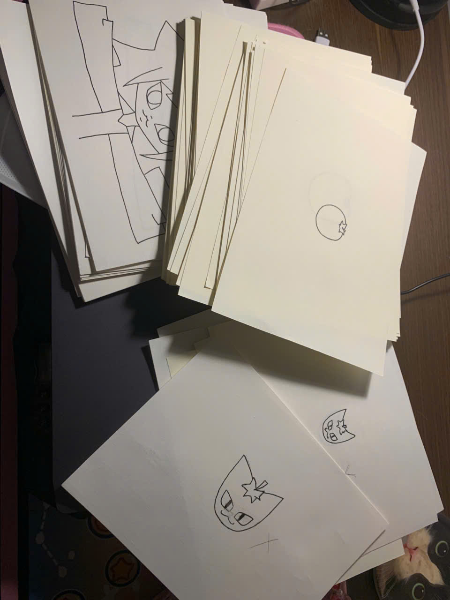
Some behind the scenes of the project.
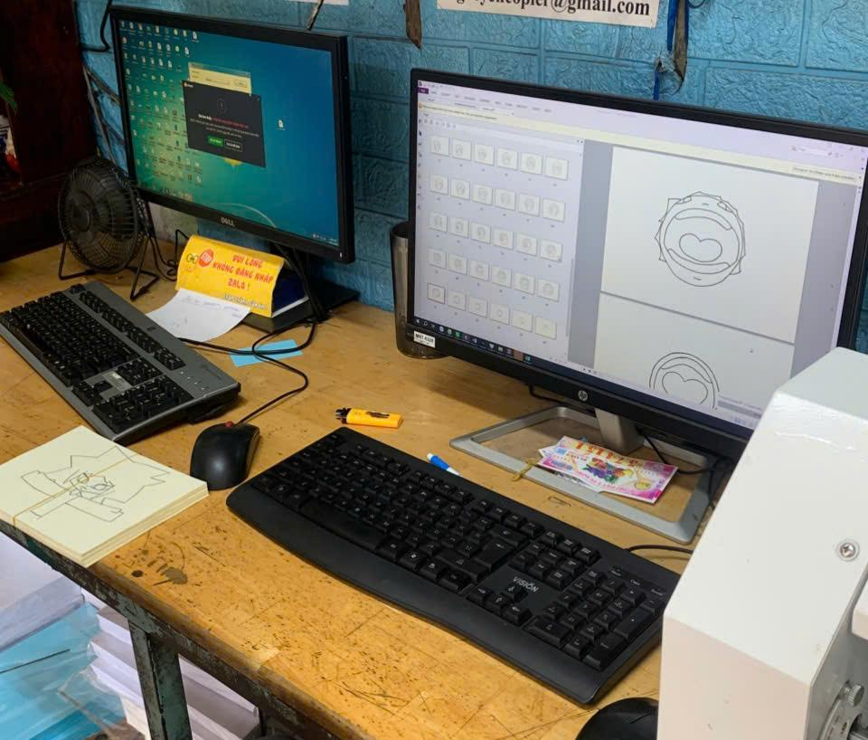
.
Credits
how was your day | Original track by prod. inuyasha
For More Details
Visit What is going on? original post on Instagram.
Visit ''how was your day'' by prod. inuyasha on YouTube.